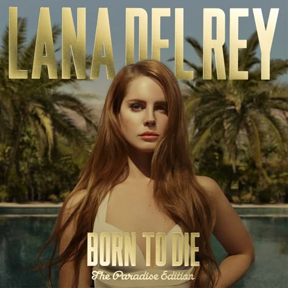

Cultura Nostalgia Vintage
Há algo de bonito em coisas que já passaram.
A textura do tempo deixa marcas que não se apagam, só se suavizam. Um vinil riscado que ainda toca, uma fotografia com cantos amarelados, uma carta escrita à mão em papel que já não se fabrica. Tudo isso carrega um tipo de silêncio que fala, e como fala.
Nostalgia vintage não é só sobre o passado.
É sobre o desejo de sentir como se o mundo ainda fosse mais lento, mais analógico, mais sincero. Onde um telefonema valia mais do que mil mensagens, e uma despedida durava dias em vez de desaparecer num clique.
É a vontade de viver num filme antigo,
de usar roupas com história,
de dançar uma música que já embalou outras almas antes da sua.
É buscar beleza nas rachaduras, nos cheiros esquecidos, nas fitas cassete que giram devagar.
É o tipo de saudade que você sente de algo que talvez nem tenha vivido, mas sente mesmo assim. Como se seu corpo tivesse memória de um tempo que sua mente não alcança.
No fundo, nostalgia vintage é sobre romantizar o mundo só pra conseguir viver nele.
E tá tudo bem. Às vezes, o que salva a gente é exatamente essa capacidade de tornar as coisas mais bonitas do que realmente foram.
Som do Dia
"Summertime Sadness" - Lana Del Rey
É mais do que uma música: é uma sensação inteira. É o calor do verão sendo engolido por uma melancolia doce e devastadora. É o som de alguém se despedindo da luz com um vestido esvoaçante, cigarro na mão e olhos marejados de memórias que queimam.
Estética Sonora:
Camas de sintetizadores densos, batidas que ecoam como corações partidos em câmera lenta, e a voz da Lana, que não canta, mas suspira, implora, desfalece.